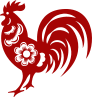

Hubungan
本命 辰DIRI ANDA
三合 SāN HÉSEGITIGA HARMONI
六合 LIù HÉPASANGAN COCOK
六沖 LIù CHōNGBENTROK LANGSUNG
六害 LIù HàIMENGHAMBAT HALUS
宜 COCOK
Pasangan Selaras
子Tikus三合 · BESAR JAYA
Segitiga harmoni 申-子-辰. Pasangan paling natural — Tikus 子 menjadi sumber Air yang menyiram 甲木 dengan terkendali.
申Monyet三合 · BESAR JAYA
Penutup segitiga 申-子-辰. Lincah & cerdas — partner bisnis ideal untuk 偏財格 Anda yang menjala wealth.

酉Ayam六合 · COCOK
Pasangan 辰-酉 (六合). Disiplin, terstruktur, telaten — melengkapi visi Anda dengan eksekusi rapi.
忌 HINDARI
Berisiko Bentrok
戌Anjing六沖 · BENTROK
Bentrok langsung 辰-戌. Dua "tanah" saling tabrak — pola karakter keras kepala vs keras kepala, sering gesek di nilai-nilai pokok.
卯Kelinci六害 · MENGHAMBAT
Halangan halus 辰-卯. Tidak frontal, tetapi melelahkan jangka panjang & merintangi pertumbuhan finansial.

辰Naga自刑 · KONFLIK DIRI
Sesama Naga = 自刑. Bagan Anda sudah punya 2 辰 — tambahan pasangan 辰 memperberat konflik internal & persaingan ego.
丑Kerbau破 · MENGGANGGU
辰-丑 termasuk relasi 破 (rusak) — empat-pilar tanah saling 刑. Kompromi sulit, beban emosional menumpuk.